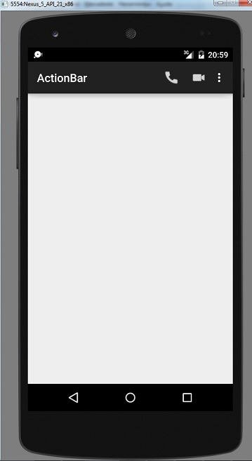
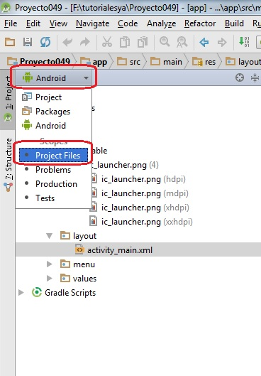
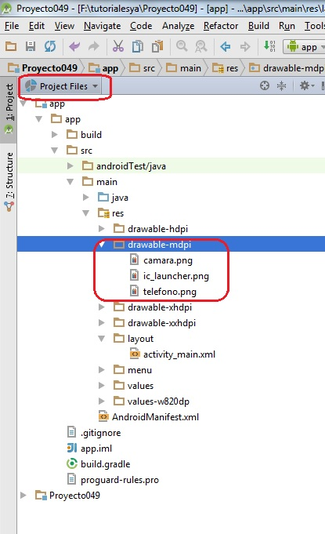

45 - Componente ActionBar (Botones de acción) |
Ahora veremos otra característica que podemos agregarle a la barra de acción (ActionBar). Como habíamos visto la barra de acción muestra a la izquierda un título y del lado derecho un botón que muestra un menú desplegable. Podemos disponer opciones de dicho menú que se muestren directamente en la barra de acción para que tengamos acceso a dichas opciones en forma directo sin tener que abrir el menú desplegable.
Confeccionar una aplicación (Proyecto049) que muestre como título "ActionBar" y luego dos botones de acción y tres opciones en el menú desplegable del ActionBar.
La interfaz del ActionBar, el título, los botones de acción y el menú desplegable debe ser similar a:
Como podemos observar hay dos botones de acción siempre visibles (podemos mostrar normalmente su ícono, pero si disponemos de dispositivos más grandes podemos mostrar un texto inclusive)
Veamos los pasos que debemos dar para obtener este resultado:
Lo primero es disponer dos imágenes de 32x32 píxeles en la carpeta drawable-mdpi, una que represente un teléfono y otra una cámara fotográfica (recordemos que los nombres de archivos deben estar en minúsculas, sin espacios, no empezar con un número y no contener caracteres especiales, salvo el guión bajo), podemos llamar a los archivos telefono.png y camara.png
Dispondremos solo estas dos imágenes en en la carpeta drawable-mdpi.
Lo más fácil para insertar estos archivos a dicha carpeta es disponer la ventana de "Project" en vista de "Project File"
Y ahora ubicar la carpeta drawable-mdpi y copiar las dos imágenes:

<?xml version="1.0" encoding="utf-8"?>
<resources>
<string name="app_name">ActionBar</string>
</resources>
Este archivo de recursos se utiliza para agrupar todos los mensajes que aparecen en pantalla y facilitar la implementación de aplicaciones para varios idiomas independiente de los algoritmos de la misma.
En este archivo hemos creado un string llamado "app_name" con el valor "ActionBar".
Luego este string se asocia con el título de la aplicación mediante el archivo AndroidManifest.xml:
<?xml version="1.0" encoding="utf-8"?>
<manifest xmlns:android="http://schemas.android.com/apk/res/android"
package="ar.com.tutorialesya.proyecto049" >
<application
android:allowBackup="true"
android:icon="@drawable/ic_launcher"
android:label="@string/app_name"
android:theme="@style/AppTheme" >
<activity
android:name=".MainActivity"
android:label="@string/app_name" >
<intent-filter>
<action android:name="android.intent.action.MAIN" />
<category android:name="android.intent.category.LAUNCHER" />
</intent-filter>
</activity>
</application>
</manifest>
En este archivo XML ya está inicializada la propiedad label de la marca application con el valor definido en el archivo xml (como vemos acá hacemos referencia al string app_name):
android:label="@string/app_name"
<menu xmlns:android="http://schemas.android.com/apk/res/android"
xmlns:app="http://schemas.android.com/apk/res-auto"
xmlns:tools="http://schemas.android.com/tools" tools:context=".MainActivity">
<item
android:id="@+id/telefono"
app:showAsAction="always"
android:icon="@drawable/telefono"
android:title="telefono"/>
<item
android:id="@+id/camara"
app:showAsAction="always"
android:icon="@drawable/camara"
android:title="camara"/>
<item
android:id="@+id/opcion1"
app:showAsAction="never"
android:title="Opción 1"/>
<item
android:id="@+id/opcion2"
app:showAsAction="never"
android:title="Opción 2"/>
<item
android:id="@+id/opcion3"
app:showAsAction="never"
android:title="Opción 3"/>
</menu>
Lo nuevo con respecto al concepto anterior es la definición de dos item que inicializamos la propiedad showAsAction con el valor "always" con lo que indicamos que queremos que siempre se muestre visible esta opción en la barra de acción, y además definimos la propiedad icon con el nombre de la imagen que agregamos a la carpeta drawable-mdpi:
<item
android:id="@+id/telefono"
android:showAsAction="always"
android:icon="@drawable/telefono"
android:title="telefono"/>
La funcionalidad de nuestro programa será mostrar un Toast cuando se seleccione alguno de las opciones del menú o un botón de acción. El código java de la clase MainActivity debe ser:
package ar.com.tutorialesya.proyecto049;
import android.support.v7.app.ActionBarActivity;
import android.os.Bundle;
import android.view.Menu;
import android.view.MenuItem;
import android.widget.Toast;
public class MainActivity extends ActionBarActivity {
@Override
protected void onCreate(Bundle savedInstanceState) {
super.onCreate(savedInstanceState);
setContentView(R.layout.activity_main);
}
@Override
public boolean onCreateOptionsMenu(Menu menu) {
// Inflate the menu; this adds items to the action bar if it is present.
getMenuInflater().inflate(R.menu.menu_main, menu);
return true;
}
@Override
public boolean onOptionsItemSelected(MenuItem item) {
// Handle action bar item clicks here. The action bar will
// automatically handle clicks on the Home/Up button, so long
// as you specify a parent activity in AndroidManifest.xml.
int id = item.getItemId();
if (id == R.id.telefono) {
Toast.makeText(this, "Se presionó el ícono del teléfono", Toast.LENGTH_LONG).show();
return true;
}
if (id == R.id.camara) {
Toast.makeText(this, "Se presionó el ícono de la cámara", Toast.LENGTH_LONG).show();
return true;
}
if (id == R.id.opcion1) {
Toast.makeText(this, "Se presionó la opción 1 del menú", Toast.LENGTH_LONG).show();
return true;
}
if (id == R.id.opcion2) {
Toast.makeText(this, "Se presionó la opción 2 del menú", Toast.LENGTH_LONG).show();
return true;
}
if (id == R.id.opcion3) {
Toast.makeText(this, "Se presionó la opción 3 del menú", Toast.LENGTH_LONG).show();
return true;
}
return super.onOptionsItemSelected(item);
}
}
Como podemos observar la captura del clic de los botones de acción es idéntico a las opciones del menú desplegable:
@Override
public boolean onOptionsItemSelected(MenuItem item) {
// Handle action bar item clicks here. The action bar will
// automatically handle clicks on the Home/Up button, so long
// as you specify a parent activity in AndroidManifest.xml.
int id = item.getItemId();
if (id == R.id.telefono) {
Toast.makeText(this, "Se presionó el ícono del teléfono", Toast.LENGTH_LONG).show();
return true;
}
if (id == R.id.camara) {
Toast.makeText(this, "Se presionó el ícono de la cámara", Toast.LENGTH_LONG).show();
return true;
}
if (id == R.id.opcion1) {
Toast.makeText(this, "Se presionó la opción 1 del menú", Toast.LENGTH_LONG).show();
return true;
}
if (id == R.id.opcion2) {
Toast.makeText(this, "Se presionó la opción 2 del menú", Toast.LENGTH_LONG).show();
return true;
}
if (id == R.id.opcion3) {
Toast.makeText(this, "Se presionó la opción 3 del menú", Toast.LENGTH_LONG).show();
return true;
}
return super.onOptionsItemSelected(item);
}
Este proyecto lo puede descargar en un zip desde este enlace: proyecto049.zip
Volver a codificar el problema anterior para mostrar dos botones y tres opciones en el menú del ActionBar localizando todos los mensajes en el archivo strings.xml
La solución a este problema lo puede descargar en un zip desde este enlace: proyecto050.zip